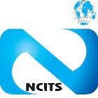

.jpg)
Hi, my name is Danish Pasricha!
ABOUT ME
Web Dev
Programming
Data & APIs
Backend
.jpg)
Who am I?
I am a passionate Computer Science professional who has an insatiable appetite for learning new things and have a good history in algorithms and problem-solving. Developing the skills necessary to create software and web applications (that are reliable, scalable, and effective) through my projects and professional experiences. I am eager to contribute to a dynamic software development team, where I can collaborate with like-minded professionals and make a meaningful difference. Let's connect and explore how our synergy can lead to positive outcomes.
PORTFOLIO
-
NokiaSoftware Engineer Intern
- Employed gRPC protocol for efficient communication among distributed systems. Enabled secure data exchange using protocol buffers over varied network connections.
- Worked in SR-Linux Team and Implemented MPLS service configuration on Nokia routers; Employed Bash scripting and TCP/IP skills.
- Converting Python from TCL for Model-driven CLI on IXR platforms and thus reducing the running time to 50% with the help of parallel processing and OOPs.
- Working with a team which will eliminate the dependency of software base on IXIA hardware beds and replace them with SIREN beds resulting in saving 4 million dollars per month as hardware beds maintenance cost
-
EdPlus at Arizona State UniversitySoftware Developer
- Designed a React scheduling app with AWS Amplify, integrating Cognito, DynamoDB, and Lambda for high uptime. Executed thorough Front End testing using Jest, while optimizing user experience through HTML5, CSS3, and JavaScript.
- My role required me to collaborate with cross-functional teams, and I was able to manage and prioritize tasks effectively using Kanban board and JIRA. Conducted comprehensive code reviews in a team of 5 developers, providing constructive feedback leveraging best practices for scalability and maintainability, resulting in an overall code improvement of 40%.
- Achieved 70% cost reduction by transitioning from the previous Doodle App to Serverless architecture and adopting pay-as-you-go AWS services. Led a PoC with Terraform and AWS ECR, cutting deployment time by 30%.
-
Arizona State UniversityGraduate Student Assistant
- Assists with preparation, distribution, collection of test materials with assignments and projects of course CSE-463 under supervision of Dr. Robert Atkinson.
- Conducted one-on-one sessions for students for their reports and projects to implement strategic planning.
-
Tredence Inc.Data Engineer
- Worked on the backend REST APIs and Data Model using Django ORM.
- Extracted data from multiple sources like cloudingo, Salesforce, BSFDC, Sonian, MSP using Talend
- Implemented the Logic to extract a Master-data point from the duplicated data points from multiple sources
- Ensured on-time delivery of the assigned tracks
-
NCITS MumbaiSoftware Developer
- Developed robust CRUD APIs for essential client services, including Data management, Database operations, Exception handling and Unit Test coverage using JUnit and Mockito.
- Employed the synergy of AWS S3, Apache Kafka, and Spring Boot to orchestrate a real-time monitoring mechanism, effectively facilitating the migration of a substantial volume of 200,000 user data records.
- Achieved <2% error rate with Multithreading and asynchronous design, and optimized API performance using Redis and PostGreSQL, cutting latency and search time from 1 second to 400 milliseconds.
 -
AWS Face Recognition as a ServiceCloud Computing | ASU
- IaaS : Created a cloud-based application that provides face recognition services using AWS resources such as S3, SQS, and EC2 to perform deep learning using CNN models on user-supplied images. The application is elastic and can scale in and out based on user demand and concurrent requests
- PaaS: Developed a real-time Face Recognition application using a Raspberry Pi device as the edge computing platform. Tech Used: Python, Docker, S3, AWS Lambda, DynamoDB, API Gateway, CloudWatch

-
Expense Manager AppDatabase Management System Implementation | ASU
- Developed a production-ready, industry-standard Full Stack Web Application using Spring Boot and Thymeleaf
- Connected the Spring Boot application with popular ORM Frameworks like JPA, Hibernate, and MySQL/PostgreSQL databases, ensuring data integrity and consistency.
- Implemented Spring Security to encrypt plain passwords and secure the Spring Boot Web application, ensuring maximum protection of sensitive user data.
- Improved the user interface by adding Bootstrap 5 to Thymeleaf templates, making the application mobile-responsive and user-friendly and added CSS, Javascript, and jQuery to Thymeleaf templates to enhance the user experience and improve the overall functionality of the application.
- Dockerized and Deployed the Spring Boot application to Heroku and AWS cloud, ensuring high scalability, performance, and availability.
-
NASA Space Launch ApplicationPersonal Project
- Developed a Full stack MERN app using Node.js, Express Framework, RESTful APIs, GraphQL and React, providing an immersive experience for exploring the possible habitable planets and conducted thorough testing of Node APIs using Jest and Supertest.
- Used MongoDB to add persistence to the project, enabling users to save their preferences and access them later.
- Added Pagination to the API, improving the performance and scalability of the application, while also ensuring optimal user experience.
- Built a simple CI pipeline for NASA Project on GitHub, ensuring the code is automatically tested and deployed to production, saving valuable time and resources.
- Deployed the application to production with Docker, ensuring seamless integration with Amazon EC2 and high availability of the application.
-
InstaSphere ApplicationMultimedia Information Systems | ASU
- Developed an Instagram clone using React, Chakra UI, and Tailwind CSS for the Frontend ensuring a visually appealing and user-friendly interface
- Leveraged Spring Boot and MySQL to create a robust Backend, implementing Microservices for user data storage, and integrating Spring Security for secure authentication and authorization.
- Designed and implemented REST endpoints using Spring MVC and Spring Data REST, facilitating data retrieval and manipulation for user data, posts, comments, and more.
-
Continous Glucose Monitoring ApplicationMultimedia Information Systems | ASU
- Developed a robust meal detection method by seamlessly parsing and synchronizing Continuous Glucose Monitoring (CGM) data with meal ground truth, providing accurate insights into meal events.
- Designed and implemented four efficient algorithms for real-time meal event detection, leveraging online data processing to promptly identify meal occurrences from CGM data.
- Employed advanced modeling techniques, including Auto Regression, SARIMA, and LSTM, to create predictive models for CGM data, enhancing the understanding of glucose trends and aiding in meal detection accuracy.
- Innovatively utilized Kalman Filter and RNN-based approaches, powered by TensorFlow, to enhance meal detection precision, utilizing state-of-the-art techniques for more reliable and comprehensive results.
-
Gesture Recognition - ASLMobile Computing Project at ASU
- Developed a mobile application using Android framework to capture videos of various gestures in the AmericanSign Language
- Keypoints were extracted using Posenet and the signs were identified using a Deep NeuralNetwork using Python, TensorFlow hosted in the server and using ML algorithms(K-NN, Decision Tree etc) to classify the category of the gesture uploaded.
- Tech Stack used - Node.js, Java , Python ,Android Studio.